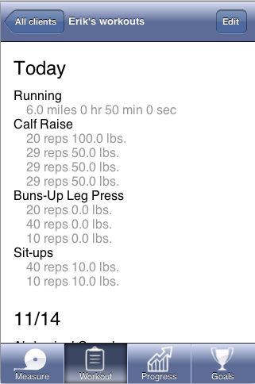

We decided to enhance the visual design of the application by changing
the color, font, and icon images. The new colors and fonts make the app
more engaging, while updated icons help clarify a button’s function. The
new visual design will also contribute to a more uniform visual design,
which addresses a piece of feedback we received in our heuristic evaluation.
We didn't have time to implement the visual design in our prototype—instead
we made photoshop mockups.
Displaying Workouts
Our evaluators felt that the display and organization of the workouts
was not ideal, saying the lists were too long, which requiring a lot of
scrolling. They recommended adding a way to organize the workouts by type.
We decided not to change this because we believe our design works well
for personal trainers.
When we first started designing, we tested out different ways of searching
for exercises. For example, we had options to search by tapping on an image
of a body, but we found in our tests that it took up too much space, added
too much clutter, and that everyone always went straight to the search
bar anyway. Personal trainers, in particular, know the exact names for
their workouts, and don't need to filter by "workout type" because it is
much faster for them to start typing the workout name.
Thus, the time we invest in determining different ways to organize lists,
body parts etc, will be disproportionate the to value added to the application.
Making Sure Users Receive Feedback
Problem
When the evaluators added a workout, they were surprised that the app
didn't give them any immediate feedback that the workout had been added.
The workout would simply appear as a list item as it did before they added
it. In order to see what workouts had been added, it was necessary to click
the "done" button. Only once they did this, could they see the details
of what they had added.
Solution
We had already designed a feedback system in our paper prototype, but
hadn't implemented it in our functional prototype yet. When a trainer adds
a workout, it floats to the top of the list, and grey text appears underneath
the workout, indicating how many sets have been added. The workouts that
have been added, and the workouts that the trainer most often uses, appear
seperated from the entire workout list by a thick grey divider.
We implemented this design (and more) in our functional prototype
A trainer starts to add a workout
The workout autosaves and floats to the top of the list.
Even when collapsed, the workout gives clear feedback that it has been
added.
Improving Consistency
Problem
Our evaluators have difficulty in editing workouts. When thet clicked
edit, they were being sent to a page with a list of
all
workouts instead of the list of exercises already logged.
Solution
Again, we had already implemented a solution to this in our paper prototype,
but hadn't yet had the time to implement it in our functional prototype.
In our paper prototype, when someone clicks "edit," they are presented
with the option to tap on a pencil icon next to each workout to edit it,
or tap on the minus icon to delete it.
We implemented this in our final prototype

The list of workouts.
When the trainer clicks "edit"
The trainer may expand any workout to edit.
Experiment Design
Overview
We wanted to improve the flow of saving workouts. In our experiment design,
we want to test the effects of having done buttons, “saved” notifications,
and appearance of textboxes on the user’s confidence and the time needed
to complete their task.
Most importantly: time how long it takes the tester to add a workout.
On a scale of 1-10, how confident are they their data is saved?
How many times need to retype/retry, especially when searching for exercise.
Counting taps
Done button
Our workouts autosave, but we wanted to test the effects of having explicit
"done" buttons, because we were concerned that people wouldn't
realize that their workouts were being saved, without clicking a "done"
or a "save" button.
We tested the form with a done button. And the same form without it.
"Workouts saved" banner notifications
Upon saving the workout, we also gave the user feedback by displaying
a green "workouts saved" notification at the top of the screen
for 1 second. We observed how confident users were that their workouts
had been saved, with, and without this notification.
Check mark notifications
We wanted to tell personal trainers that it was autosaving without getting
in their face and distracting them. We tried placing small, green check
marks next to the workout as it was saved, as opposed to displaying a large
green banner.
Response variables
Total time to save a workout
On a scale of 1-10, how confident are they their data is saved?
How many times need to retype/retry, especially when searching for exercise.
Counting taps
Hypothesis
We hypothesized that having check marks appear when each individual set
is saved, and not having a done button or “saved” notification banner will
produce the optimal version. We will see how these variations and combinations
affect our response variables.
We created a table of the responses that we expect to find for all combinations
of our variables
Done Button
"Saved" Notification
Green Check Notification
Border Around Input
confident that saved bc actively said to save, take a longer time because
added tasks of tapping “done”. not sure how to edit because textboxes gone
confident because told so, long time because it pauses you before continuing
on to next task. not sure how to edit because textboxes gone
confident saved because told so for each item. no extra time bc no extra
steps not sure how to edit because textboxes gone
unsure if saved because looks like can still edit, short time because
no extra steps just uncertainty. sure can edit because textboxes are still
there
Done
X
super confident that saved, annoyed, and long time because 2 extra steps
confident saved because told so for each item and had to actively save.
added tasks of tapping “done”. not sure how to edit because textboxes gone
fairly confident that saved bc actively said to save but not completely
confident because textboxes still apparent, a bit long because some doubt
so move slower and then extra step of saying done
Notification
very confident because told so and actively had to do it and textboxes
disappear. take a longer time because added
X
confident because told so, long time because it pauses you before continuing
on to next task. not sure how to edit because textboxes
fairly confident because told so but unsure because looks like can still
edit, long time because it pauses you before continuing on to next task
Green Check
very confident because told so and actively had to do it and textboxes
disappear. longer time because added tasks of tapping “done”
X
X
confident saved because told so for each item. no extra time bc no extra
steps.sure can edit because textboxes are still there
Combo of Three
notification+green+text sure saved because extra pop up said so and green
check next to each one. and can edit because of box
done +green+text confident saved because told so for each item. can edit.
extra time because of extra button
done+notification+green extra time because of extra button and pop up.
confident saved bc multiple indicators. not sure if can edit bc no box
done+notification+text confident can edit. sure saved because extra steps
All Four
confident because actively said done and got a notification but maybe
some doubt because textboxes indicated can still edit but not really because
the green checks will say that it is saved. very long time because multiple
extra steps
done +green+text confident saved because told so for each item. can edit.
extra time because of extra button
In running our experiment, we would ideally test 10 subjects to get a
data set that would point to what the average person might think. Unfortunately,
we do not have time in the scope of this project, so we have set up two
experiments with personal trainers and plan to test it a few more times
with fellow students.
Each subject would do five iterations of the adding, saving, and editing
workouts, each time with a different random combination of the variable
factors. There are 16 different variations to test, so by having them complete
five, they will help us get data for most of the variations while controlling
for possible individual differences. We will not ask them to do all eight
because that will become too repetitive for them and would take too much
of the subject’s time. We will also give each subject variable combinations
in a random order to control for possible ordering effects as well as familiarity
biases.
For example, Joanne would get a "done" button, and checkbox notifications
on her first test, and on Robert's first test, he would get a "saved" notification,
have no "done" button, and see textbox borders disappear after going to
the next one. Our team has no prior experience in the design of controlled
experiments, so we not only will take away useful design information from
this test, but we will also apply what we learn in future experiments we
may do outside of class. It will be interesting to understand how much
and what types of reassurance users need in trusting that the program has
saved their data inputs.
Usability Testing
We didn't alter the border around the input field, due to time constraints,
but we tested our other three variables.
Done button
"Workouts saved" notification
Green check mark notification
What we learned
We conducted three formal usability experiments: one with a personal trainer
and two with Olin students. We also conducted two informal usability tests.
Although we had a small sample size, we believe that our validity remains
strong. We learned the following:
Feedback on saving is important.
Need minimal amount of “done buttons” because too many are annoying and
confusing but need just enough so users know how to finish.
When nesting “done” buttons for actions within actions on a page, need
to make it clear which one refers to which action.
The green check mark icon can easily be confused with a button if it is
styled too similarly to the delete button.
Interviews
A raw representation of the data and insights we collected.
Scenario: Your client just did some buns-up leg presses. He did three
sets; the first set, he did 10 reps at 120 lbs. The second set was the
same. The third set, he did 8 reps at 120lbs. Can you please log his workouts?
Krista Jameson: A personal trainer at a local gym who is not a regular
iPhone user
Trial 1: No done button, green check marks, no "workouts saved"
notification
Task completion time: 43 sec.
Confidence that workouts were saved: low.
Notes:
Despite not being a regular iPhone user, Krista immediately starts to
enter the information and asks “wouldn’t it be easy if you guys had a duplicate
button so trainers don’t have to repetitively add the same information?”
We ask her if it feels like her information is saved and she responds,
“ It doesn’t feel like the information that i entered had been recorded
before I press the done button”. Without the done button, she feels like
she hasn’t saved any of the inputted exercises.
Trial 2: Done button, check marks, and "workouts saved" notification
Task completion time: 27 sec.
Confidence that workouts were saved: high
Notes:
Upon completion of the task, Krista notes that she likes the confirmation
better because it makes her feel like her client information has been stored.
She tried to add a set but the buttons were too close, so there were some
mishaps there.
James Huang: A college student
Trial 1: no done button, “saved” notification, no green check notification
Task Completion Time: 35.8s
Notes:
After inputting the first two tasks, James moves onto the third set and
notes that he sees a done button. As such, he is going to go ahead and
click on it and is satisfied that it takes him to the client workouts,
which is exactly what he anticipated and wanted. When asked if he felt
like the data was saved, he says “No, there is not enough of a feedback
to tell me that it is saved.”
When asked what he expected to see upon clicking the done button he responds,
“I expect to see a quick popup that tells me my client data is saved.”
He also mentions that he thinks the layout is good he doesn’t need to look
anywhere else in order to add a workout for a person because the layout
tells him which buttons to press.
Trial 2: done button, “saved” notification, green check notification:
Task Completion Time: 19.3s
Notes:
With the addition of a second done button, James says that out of the
two done buttons that he sees, he is going to click on the one underneath
the rep/set buttons. He also mentions that it is very clear that the data
is saved and that he can now add more workouts without having to go to
the review page.
He suggests that we might want to change the done button underneath the
set/lbs buttons or change the diction on the button because having two
done buttons is confusing.
Trial 3: done button, “saved” notification, no green check notification:
Task Completion Time: 17.0s
Notes:
After completing the tasks, he notes that he did not notice any big difference
from the previous layout besides the absence of check marks. He states
that he does not have a layout preference when it comes to check marks.
Ryan Powell: A college student
We did not record times on this interview.
Problem with the spinner
Ryan was initially confused by the spinning icon that appeared next to
a workout set while he was typing. He had started typing in the "minutes"
field, and the spinning icon appeared.
This icon indicates that the app is trying to save the workout. Usually,
it disappears quickly, and is replaced by a check mark, if the workout
form has been filled out completely. This is intended to keep the trainer
informed of the app's internal state. If it weren't transparent,
and didn't show a spinning icon when it is in the process of saving,
then the trainer using it could be confused about whether or not the app
is actually doing anything, and could navigate away from the page before
the green checkmark appears.
Mistakenly, we made the spinning icon appear while the form was not completely
filled out (e.g., Ryan had only begun typing in the minutes field). This
made Ryan feel as if he could not go on to the "miles" field,
until the spinner stopped spinning. He was afraid that minutes would not
be saved.
Our spinner distracted him, making him think that the app was "busy"
and that he could take no further action. We fixed this issue by making
the spinning icon only appear briefly, representing that the app noticed
that he started typing, and briefly to save the form, but didn't.
Confusion with workout headers
When a workout is added, we make it appear at the top of the workouts
list, so that the trainer can see that it has been added. We also separate
it visually from the other workouts by a thick divider line. In our paper
prototype, we also wrote under the workout "[x] sets logged"
to indicate that the trainer had added something.
Paper Prototype
Version A
Version B
We used a prototype with Ryan that had a divider line (indicating that
"Buns-Up Leg Press and "Abdominal Crunch" had been added),
as opposed to the workouts below the line, which hadn't been added.
Ryan was confused as to what the line meant, and sometimes didn't
notice that the workouts had even moved (for example, when the workout
was already near the top of the list). Based on this feedback, we modified
the interface to make it more clear which workouts had been added.
We added two headers, Today's Workouts , and More Workouts to the
list.
As the trainer adds workouts, they move up to the Today's Workouts
list.
We added grey text next to workouts indicating what had been added (e.g.
"1 set"). This text was in our original paper prototype as well.
Now it is much more clear when a workout has been added, and the trainer
can easily see the state of their workout list, and see, at a glance, which
workouts they have already added.
"Workouts Saved" Notification
Ryan thought the "Workouts Saved" notification that appeared
at the top of the screen was worrisome because it only appeared for a second,
it slid in and out like an "alert" and he didn't get a chance
to read it. He felt that he had possibly missed an "error message."
Ryan preferred the workouts form without a done button , with checkmarks
, and without "saved" notifications . "why would you have
a done button if it saves automatically as I type?"
Betty Lee and Tim Valencia: college students
In two separate informal user tests with Betty and Tim, they both initially
thought the check marks were a "confirmation button" to click
on, and tried tapping on it. Understandably so! The check mark is shaped
similarly to the "delete" button in our original design.
We adapted the check mark to look more like an unclickable notification,
and less like a button. Hopefully this will result in less confusion in
the future.
If we had more time
We would perform more tests, be more thorough when recording times, and
try modifying the green notification banner. It seemed to help, but also
was distracting, and in one case, worrisome for the user. It's possible
that we could display this confirmation next to the name of the workout,
similar to the grey text. We could use this in with, or without green check
marks, and see if there is a significant difference.
We would also test out duplicating a workout when the trainer enters a
new set, and see if that improves efficiency of entering workouts.
 We decided to enhance the visual design of the application by changing
the color, font, and icon images. The new colors and fonts make the app
more engaging, while updated icons help clarify a button’s function. The
new visual design will also contribute to a more uniform visual design,
which addresses a piece of feedback we received in our heuristic evaluation.
We didn't have time to implement the visual design in our prototype—instead
we made photoshop mockups.
We decided to enhance the visual design of the application by changing
the color, font, and icon images. The new colors and fonts make the app
more engaging, while updated icons help clarify a button’s function. The
new visual design will also contribute to a more uniform visual design,
which addresses a piece of feedback we received in our heuristic evaluation.
We didn't have time to implement the visual design in our prototype—instead
we made photoshop mockups.

 When the evaluators added a workout, they were surprised that the app
didn't give them any immediate feedback that the workout had been added.
The workout would simply appear as a list item as it did before they added
it. In order to see what workouts had been added, it was necessary to click
the "done" button. Only once they did this, could they see the details
of what they had added.
When the evaluators added a workout, they were surprised that the app
didn't give them any immediate feedback that the workout had been added.
The workout would simply appear as a list item as it did before they added
it. In order to see what workouts had been added, it was necessary to click
the "done" button. Only once they did this, could they see the details
of what they had added.